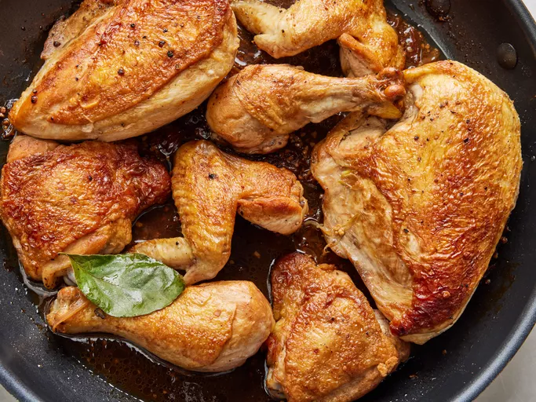

Chicken Adobo Recipe
Home

Description:
Chicken adobo is widely considered the quintessential Filipino national dish,
famous for its perfect balance of savory, tangy, and garlicky notes.
Ingredients:
- Chicken: 1 kg chicken pieces (preferably bone-in thighs and drumsticks)
- Soy Sauce: 1/2 cup regular soy sauce
- Vinegar: 1/3 cup white cane vinegar (or cane vinegar)
- Garlic: 1 whole head of garlic, crushed
- Bay Leaves: 3 to 4 dried bay leaves (laurel)
- Whole Peppercorns: 1 tablespoon whole black peppercorns
- Water or Broth: 1 cup water (to help simmer and reduce)
- Cooking Oil: 1 to 2 tablespoons (for searing the chicken)
- Sugar: 1 teaspoon (optional, to balance the acidity)
Steps:
- Marinate the chicken: In a large bowl, combine the chicken, soy sauce, crushed garlic, and whole black peppercorns. Let it marinate for at least 30 minutes, or overnight in the refrigerator for maximum flavor.
- Sear the meat: Heat cooking oil in a large pot or wok over medium-high heat. Remove the chicken from the marinade (reserve the liquid) and sear the pieces for 2 to 3 minutes per side until lightly browned.
- Simmer with marinade: Pour in the reserved marinade, water, and dried bay leaves. Bring to a boil, then lower the heat, cover the pot, and let it simmer for 20 to 25 minutes until the chicken is completely tender.
- Add the vinegar: Pour in the vinegar. Do not stir the pot right away; let it boil uncovered for 3 to 5 minutes to allow the harsh alcohol sharpness of the vinegar to cook off.
- Reduce the sauce: Stir the pot gently. If using sugar, add it now to balance the acidity. Continue to simmer uncovered for another 5 to 10 minutes until the sauce reduces into a rich, slightly oily glaze that coats the chicken.